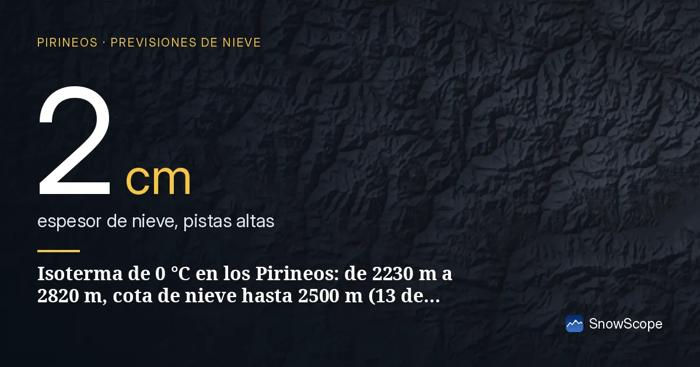

Isoterma de 0 °C en los Pirineos: de 2230 m a 2820 m, cota de nieve hasta 2500 m (13 de noviembre)
En los Pirineos, la altura donde la temperatura del aire cruza 0 °C es la frontera entre nieve y lluvia. En los próximos días este nivel de congelación se mueve entre 2230 m y 2820 m a lo largo de la cordillera, situando la línea de nieve unos 300 m por debajo de ese nivel durante las horas más cálidas del día. El manto de nieve existente parece protegido del daño por lluvia en el próximo período.
Consulta la previsión de nieve en tiempo real de Boí Taüll en la app SnowScopeEspesor de nieve, alertas de nieve polvo y mapa 3D, gratis.
Dónde la precipitación cae como nieve
El viernes 13 de noviembre la línea de nieve se sitúa alrededor de 2300 a 2500 m en las estaciones, dependiendo de las horas punta cuando el aire se calienta más. Esto significa que las cimas altas se mantienen lo bastante frías para la nieve, mientras que las laderas medianas y bajas reciben lluvia o nieve mojada que drena rápidamente.
El domingo 15 de noviembre el nivel de congelación cae a 2230 m en su punto más bajo, así que la línea de nieve también baja. Este patrón más frío significa que más precipitación se quedará como nieve en las cotas más altas. En Gavarnie-Gèdre, donde la cima está a 2283 m, la línea de nieve cae por debajo de la cima el domingo, permitiendo que más de la montaña retenga nieve.
| Estación | Espesor de nieve | Nieve nueva, 72 h | Previsto, próximos días | Cota máx. |
|---|---|---|---|---|
| Boí Taüll | 2 cm | 6 cm | 8 cm | 2747 m |
| Aramón Cerler | 1 cm | 6 cm | 10 cm | 2618 m |
| Grand Tourmalet | 2 cm | 6 cm | 11 cm | 2464 m |
| Gavarnie-Gèdre | 0 cm | 3 cm | 17 cm | 2283 m |
| La Pierre Saint-Martin | 0 cm | 3 cm | 7 cm | 2146 m |

Lluvia sobre nieve vieja: el análisis del riesgo
La lluvia que cae sobre nieve vieja puede hacerla pesada e inestable. El peligro es mínimo aquí porque en los días con lluvia, la línea de nieve se mantiene muy por encima del manto de nieve existente en cada estación. En Baqueira-Beret y Saint-Lary caerán 14 mm y 25 mm de agua en los próximos días, pero la línea de nieve durante esas horas húmedas se sitúa a 2540 m y 2560 m respectivamente, dejando el fino manto de nieve seco.
Boí Taüll tiene 2 cm en sus laderas superiores a 2747 m; la línea de nieve el viernes se sitúa cerca de 2500 m, así que la cima permanece en la zona de nieve. El 1 cm de Aramón Cerler a 2618 m está igualmente protegido, con la línea de nieve alrededor de 2500 m el viernes. La historia es la misma en toda la cordillera: la nieve existente está por encima de la línea donde la lluvia se convierte en nieve.

Cómo cambia el nivel de congelación día a día
Viernes 13 de noviembre: nivel de 0 °C oscila de 2470 m (hora más fría) a 2820 m (más cálida). Sábado 14 de noviembre: de 2400 m a 2750 m; aún cálido pero bajando. Domingo 15 de noviembre: de 2230 m a 2720 m; una caída marcada por la noche. Lunes 16 de noviembre: de 2270 m a 2640 m; el aire más frío se instala.
La caída del domingo es el cambio clave. Cuando el nivel de congelación baja 200 m o más en un día, más de cada montaña está en la zona de nieve. En estaciones más bajas como Gavarnie-Gèdre y La Pierre Saint-Martin, esta caída el domingo significa que la línea de nieve finalmente cae por debajo de las cimas, así que las montañas enteras pueden recibir nieve en lugar de lluvia.
Qué significa la línea de nieve en la práctica
La línea de nieve es más o menos donde los copos que caen empiezan a fundirse. Se sitúa unos 300 m por debajo del nivel de 0 °C porque la nieve que se funde necesita tiempo y energía térmica. En aire seco, la evaporación enfría más los copos y puede empujar la línea más abajo aún.
El viernes en Boí Taüll, la línea de nieve cerca de 2500 m significa: por encima de 2500 m, cualquier precipitación llega como nieve; por debajo de 2500 m, cae como lluvia o nieve mojada en las laderas bajas. Las pistas altas a 2747 m acumulan nieve fresca; la base a 2039 m recibe lluvia que drena. Esta división entre nieve y lluvia en una sola estación es normal en principios de noviembre.
Qué significan 14 mm y 25 mm de agua
Baqueira-Beret verá 14 mm de precipitación en los próximos días; Saint-Lary verá 25 mm. Estas son cantidades pequeñas según los estándares de invierno. En Baqueira, el 42 por ciento de esa agua cae como nieve a la elevación de la cima de 2510 m; en Saint-Lary, el 46 por ciento. El resto cae como lluvia más abajo y drena hacia el valle.
Estos totales reducidos reflejan la temporada temprana. Las profundidades de nieve siguen siendo finas (1 a 3 cm en las laderas altas) y la nieve nueva añadirá solo 8 a 11 cm hasta el lunes. Mucha más precipitación llegará más adelante en la semana: Saint-Lary verá 10 mm el miércoles 17 de noviembre. Para entonces el nivel de congelación puede ser incluso más bajo, así que ese período de lluvia más intenso podría construir el manto de nieve de manera más efectiva.
Consejos para esquiadores
- Comprueba qué pistas de tu estación están por encima de la línea de nieve cada día. Las laderas altas se mantienen secas y esquiables más tiempo cuando llueve en las pistas bajas.
- El domingo 15 de noviembre marca un cambio a aire más frío; planifica esquiar en terreno de mayor elevación el viernes y sábado mientras el nivel de congelación es más cálido.
- La nieve de principios de temporada es fina y puede esconder rocas. Mantente en pistas preparadas hasta que las profundidades aumenten más adelante en el mes.
- El pronóstico del nivel de congelación puede cambiar varios cientos de metros. Consulta el mapa de nuevo el día antes de viajar.
- Antes de cualquier actividad fuera de pista o de montañismo, lee el boletín oficial de aludes de tu zona.
Sobre estas cifras
Los espesores de nieve de las estaciones son la nieve más profunda en las pistas altas en la fecha indicada; son estimaciones para una zona, no una medida en un punto. Las previsiones pueden cambiar. Consulta siempre el boletín oficial de aludes antes de salir fuera de pista.
Boletines oficiales de aludes: Météo-France / Meteocat / AEMET
Citar este informe
Para investigación, docencia o prensa: cifras y gráficos reutilizables libremente bajo CC BY 4.0 con esta cita.
SnowScope (2026), Isoterma de 0 °C en los Pirineos: de 2230 m a 2820 m, cota de nieve hasta 2500 m (13 de noviembre), https://snowscope.app/blog/es/2026/11/pyrenees-freezing-level-snow-line-13-november-2026.html, consultado el 2026-11-13
SnowScope (Atlas Labs). (2026, November 13). Isoterma de 0 °C en los Pirineos: de 2230 m a 2820 m, cota de nieve hasta 2500 m (13 de noviembre). SnowScope snow reports. https://snowscope.app/blog/es/2026/11/pyrenees-freezing-level-snow-line-13-november-2026.html
BibTeX
@misc{snowscope2026pyreneesfreezinglevelsno,
author = {{SnowScope (Atlas Labs)}},
title = {Isoterma de 0 °C en los Pirineos: de 2230 m a 2820 m, cota de nieve hasta 2500 m (13 de noviembre)},
year = {2026},
month = nov,
howpublished = {\url{https://snowscope.app/blog/es/2026/11/pyrenees-freezing-level-snow-line-13-november-2026.html}},
note = {Published 2026-11-13 12:19 UTC; accessed 2026-11-13}
}· CC BY 4.0 · Métodos, datos y herramientas →
Boí Taüll: nieve y temperatura según la altura, este invierno vs el pasado (herramientas) →
Sigue Boí Taüll
Gratis: un aviso cuando llega la nieve y la previsión cada mañana.